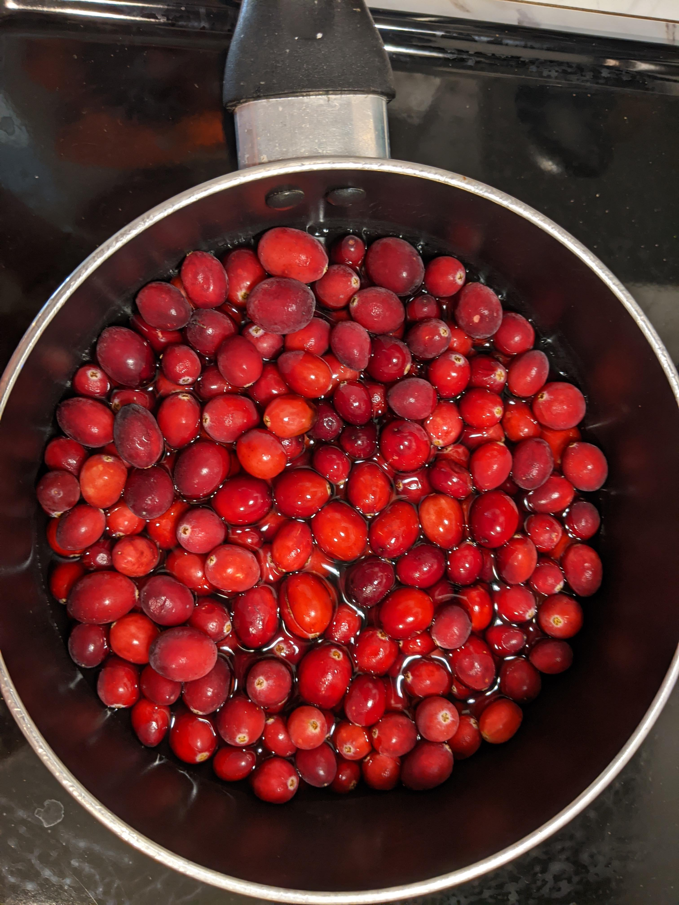
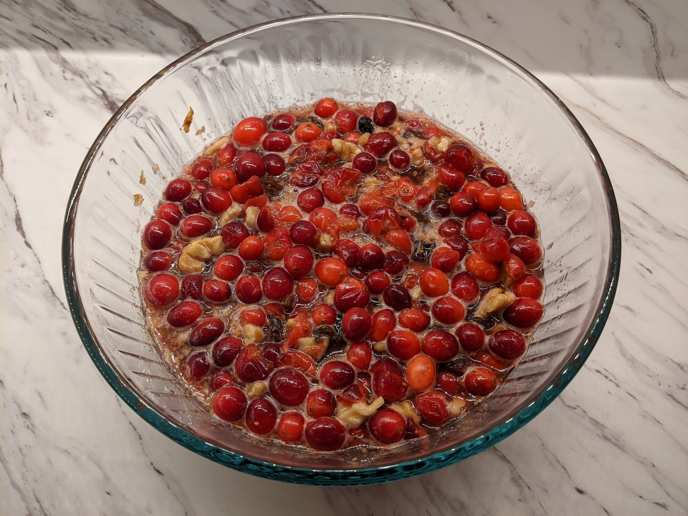
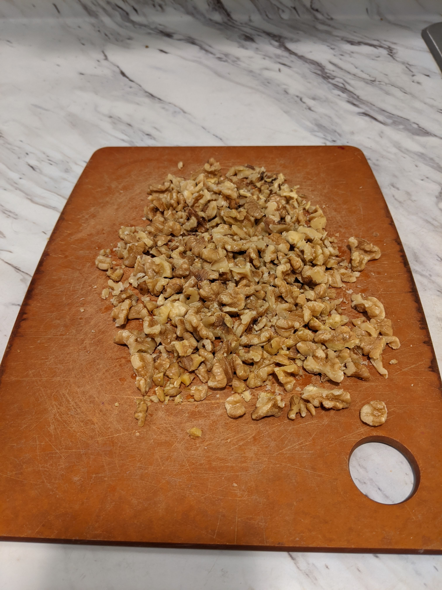
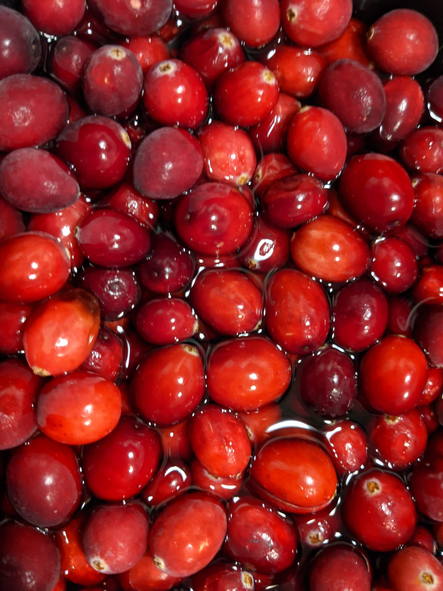
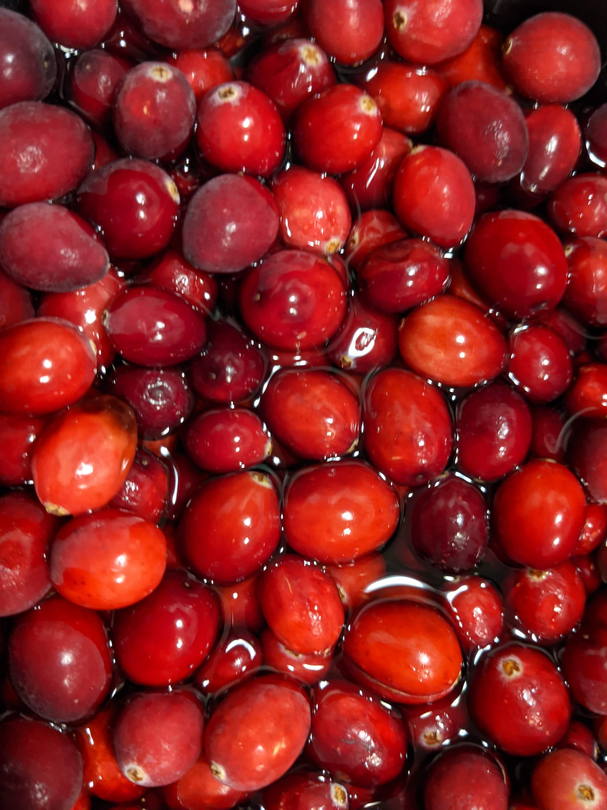
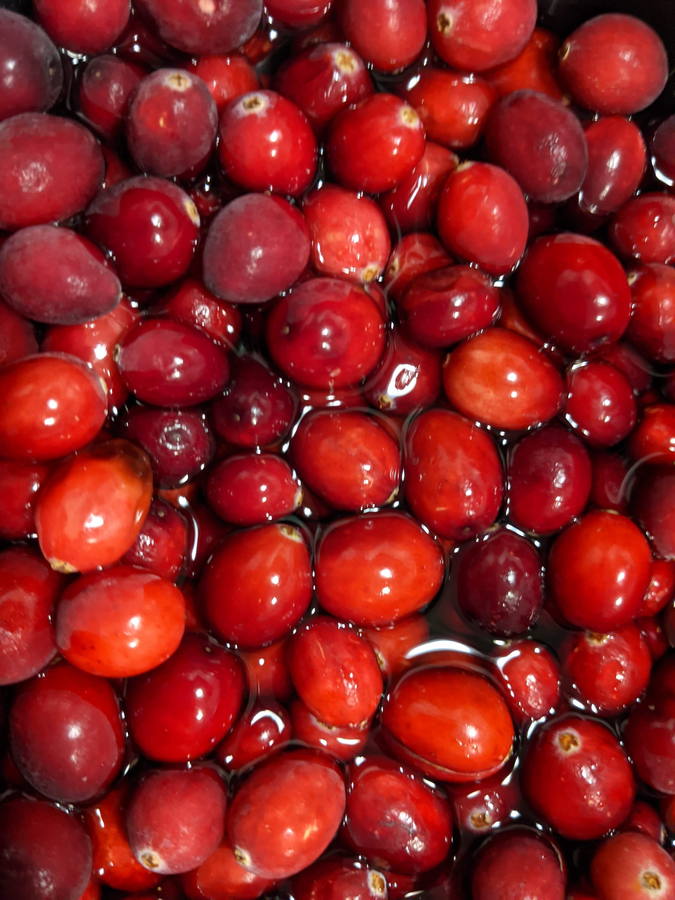

Red
Because what could be more Thanksgiving-y than a Quentin Tarantino film?
Ingredients
- 4 cups cranberries
- 1.5 cups water
- 1 cup of sugar
- 2 cups raisins
- 1 cup chopped walnuts
- 4 tablespoons brandy (less if you don’t like the taste)
Directions
- Cook the cranberries and water on low until the water boils.
- Add sugar and raisins. Cook for 10 minutes
- Add walnuts and brandy.
- Cool, then refrigerate, stirring every once and a while.
As a cherry (cranberry?) on top of this endless, surreal, at times heartbreaking, at times euphoric year, we have had to pair down our Thanksgiving culinary output to a dinner for two. While the absence of a turkey from the table couldn’t bother me less, it just wouldn’t be Thanksgiving without my grandmother’s cranberry sauce. Limited to this virtual purgatory we all now live in, and in the inclusive spirit of the holiday, I hope to connect with you, dear internet, in one of the most fundamental ways I know: food. I sincerely hope you try this recipe, or at the very least try something other than that vile stuff from a can. (Clearly we in the Lee-Moglen family have strong opinions on the subject of cranberry sauce.)



In continuation of this year’s divergence from anything resembling normalcy, I am starting a new Thanksgiving tradition: food and a film. I suppose TV is not a revolutionary pairing to the holiday, as I hear that football is often inexplicably a part of the festivities, but to that I say wholeheartedly “blegh!.” Instead, for its visual similarities with my dish of choice, I have selected Quentin Tarantino’s Inglourious Basterds. Many of Tarantino’s pieces could certainly fill this role; the man does love gore. But Inglourious Basterds is one of my all-time favorite movies, and I have a high tolerance for repeat-screenings.
 

Inglourious Basterds, if you have not yet had the opportunity to watch it, is a fictional plot line set during WWII. It follows coincident and at times conflicting efforts to assassinate Nazi high command. The “Basterds”, a lawless militia lead by Aldo Raine, hatch a plot to blow up a Nazi propaganda premier. Separately, Shoshana, the owner of the movie theater housing the premier plans to do the same. I don’t even think it’s my weakness for historical fiction that draws me to this movie, since Tarantino’s characteristic veneer of theatricality separates it from the usual style I appreciate of the genre. It is purely a tiddy, self-aware, and amusing watch. And while it has little to do with Thanksgiving, it provides a satisfying escape from today.

Inglourious Basterds, if you have not yet had the opportunity to watch it, is a fictional plot line set during WWII. It follows coincident and at times conflicting efforts to assassinate Nazi high command. The “Basterds”, a lawless militia lead by Aldo Raine, hatch a plot to blow up a Nazi propaganda premier. Separately, Shoshana, the owner of the movie theater housing the premier plans to do the same. I don’t even think it’s my weakness for historical fiction that draws me to this movie, since Tarantino’s characteristic veneer of theatricality separates it from the usual style I appreciate of the genre. It is purely a tiddy, self-aware, and amusing watch. And while it has little to do with Thanksgiving, it provides a satisfying escape from today.